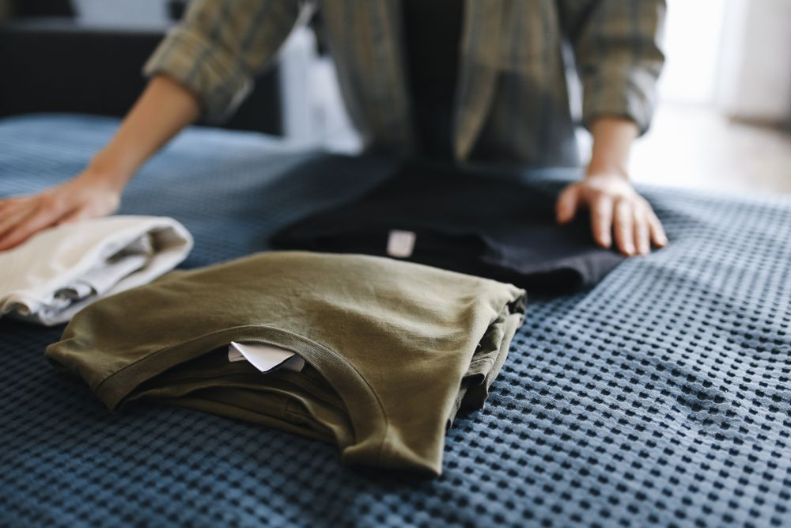
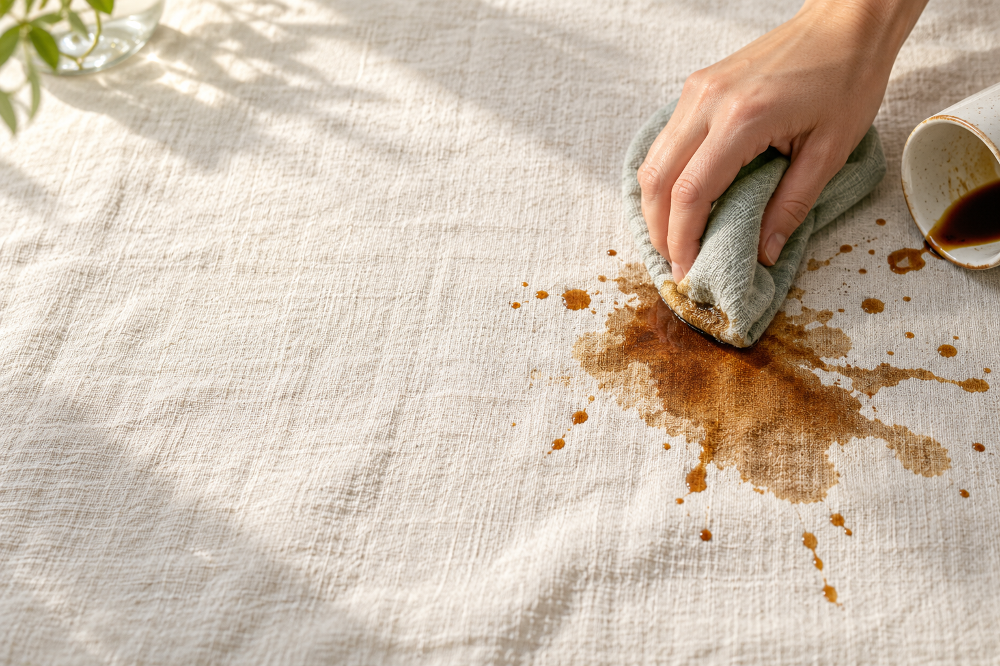
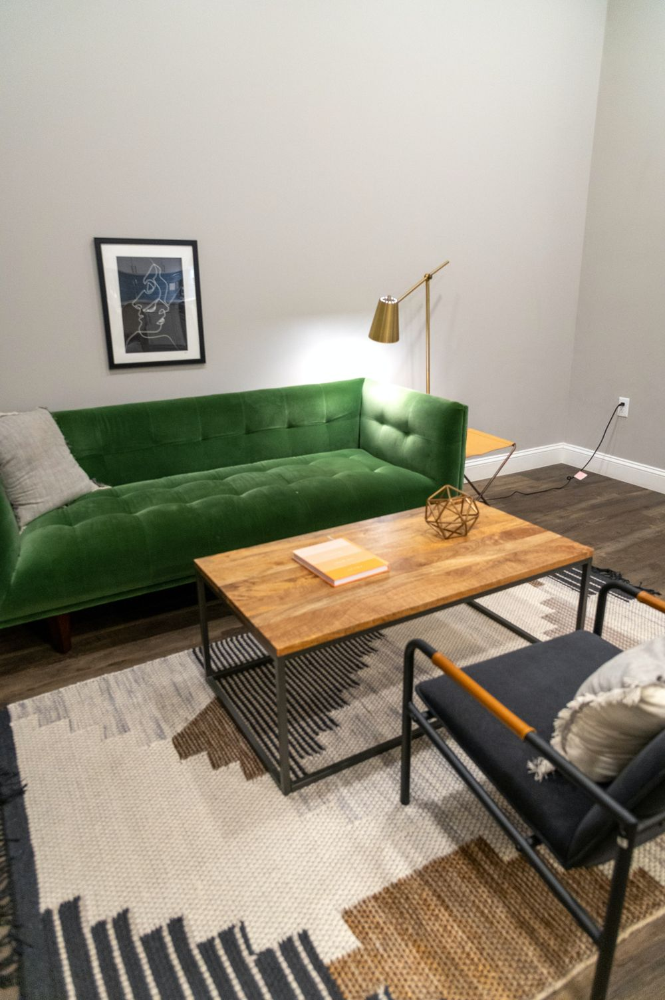
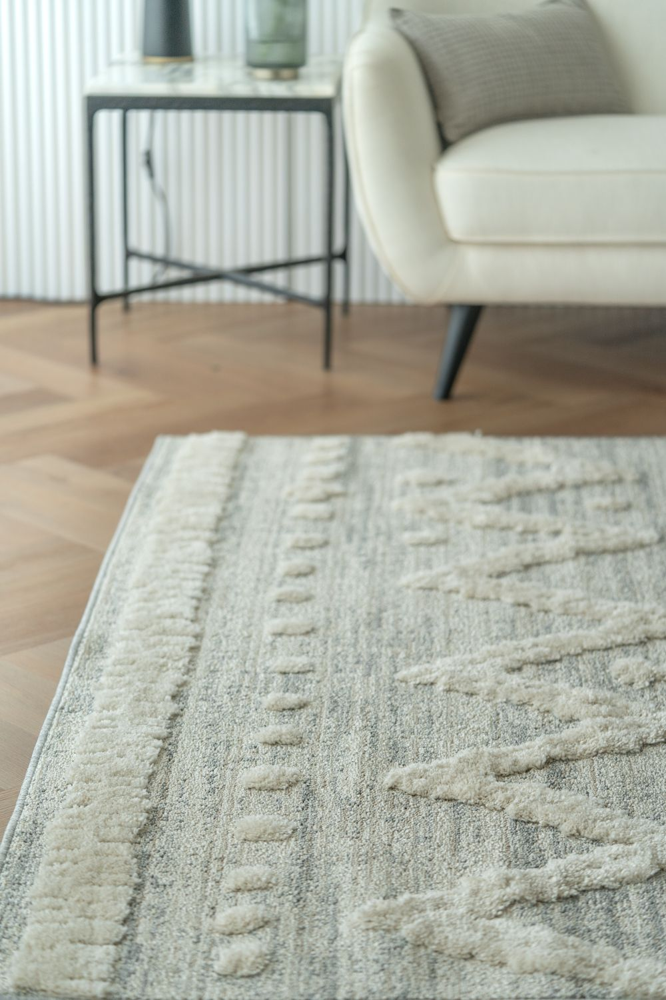
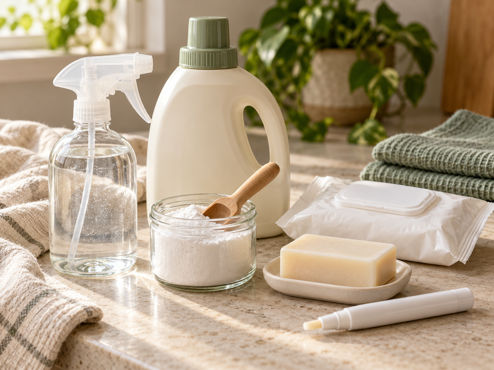

01Kıyafet & çamaşır
Pamukludan hassas giysilere, kumaşına göre bir başlangıç.
- İlk bakılacaklar
- Kumaş türü, renk ve bakım etiketi
- Bu rehberde
- Ön işlem, yıkama ve ürün uyumu
Leke çıkarıcı seçimi, lekenin türüne ve yüzeyin bakım talimatına bağlıdır. Kıyafet, koltuk ve halı için leke çıkarma yöntemlerini keşfet; sprey, toz ve sıvı ürünleri kullanım alanına göre karşılaştır.

Kıyafette işe yarayan yöntem, koltuk için uygun olmayabilir.
Lekenin bulunduğu yüzeyi seçin; uygun ilk müdahaleyi, ürün seçeneklerini ve bakım koşullarını aşağıdaki kartlardan inceleyin.
Nereden başlayacağımı bulalım →
01Pamukludan hassas giysilere, kumaşına göre bir başlangıç.

02Lekenin yanı sıra döşemenin yapısını da değerlendirin.

03Lifinden rengine, halının özelliklerini birlikte değerlendirin.
Lekenin türünü, yüzeyi ve ne kadar süredir orada olduğunu seç. İlk kontrol etmen gereken noktayı bul.
İyi bir çözüm,
doğru soruyla başlar.
Kıyafet, koltuk ve halı için uygun temizleyici türlerini karşılaştırın.
| Nerede kullanacaksınız? | Hangi temizleyici değerlendirilebilir? | Seçerken neyi kontrol etmelisiniz? |
|---|---|---|
| Yıkanabilir kıyafetler | Sıvı çamaşır deterjanı veya ön yıkama leke çıkarıcı | Kumaş, renk ve bakım etiketiyle uyumunu |
| W kodlu koltuklar | Su bazlı döşeme şampuanı veya köpük temizleyici | Döşeme için uygunluğunu; solvent içermeyen yöntemi |
| W-S kodlu koltuklar | Leke türüne göre, üreticinin izin verdiği döşeme temizleyicisi | Ürünün hem bakım koduna hem lekeye uygunluğunu |
| Halı ve kilimler | Halının lifine ve lekeye uygun noktasal temizleyici | Üreticinin temizlik iznini ve ürünün halıya uygunluğunu |
W kodu, su bazlı döşeme şampuanı veya köpük temizleyici kullanılabileceğini belirtir; solvent kullanılmaz. W-S kodunda üreticinin izin verdiği su bazlı veya susuz temizleme ürünleri değerlendirilebilir. S kodunda susuz temizleme gerekir; X kodunda sıvı veya köpük temizleyici kullanılmaz. Bakım kodunu koltuğun etiketinden kontrol edin.
Kullanım biçimlerini ve hangi durumlarda değerlendirilebileceklerini inceleyin.

Küçük bir kazadan doğru soruya.
Bu leke için henüz örnek yok. Çözüm bulucudan başlayabilirsin.
Renk, kumaş yapısı ve kullanım amacı değiştiğinde seçim koşulları da değişir.
İncelemeler yayınlandığında ürünün kullanım alanını, deneyim koşullarını ve sınırlamalarını aynı yerde görebileceksin.
Henüz yayınlanmış ürün incelemesi yok. Test edilmemiş ürünlere puan veya “en iyi” etiketi vermiyoruz.
Seçim lekenin türüne ve yüzeyin bakım talimatına bağlıdır. Her yüzeyde aynı sonucu verecek tek bir ürün önermek doğru olmaz.
Önce yüzeyin bakım etiketini ve daha önce uygulanan işlemleri belirle. Farklı ürünleri arka arkaya uygulamak yerine yüzeye uygun rehberle ilerle.
Ürünün etiketinde belirtilen renk ve kumaş uyumu belirleyicidir. Beyazlara uygun bir seçenek renklilere uygun olmayabilir.
Lekenin kaynağını, yüzey türünü ve önceki uygulamaları kontrol et. Beklemiş lekeler için yöntemi bakım talimatına göre değerlendirmek gerekir.
Üreticinin bakım talimatını esas al. Bakım etiketinin bilinmediği veya profesyonel bakım istediği durumlarda uzman görüşü al.
Lekeçıkarıcı.com bir bilgi ve seçim rehberidir. Burada ürün satışı yapılmaz.